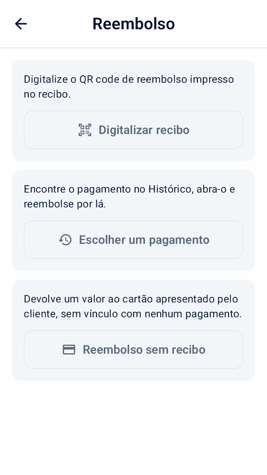
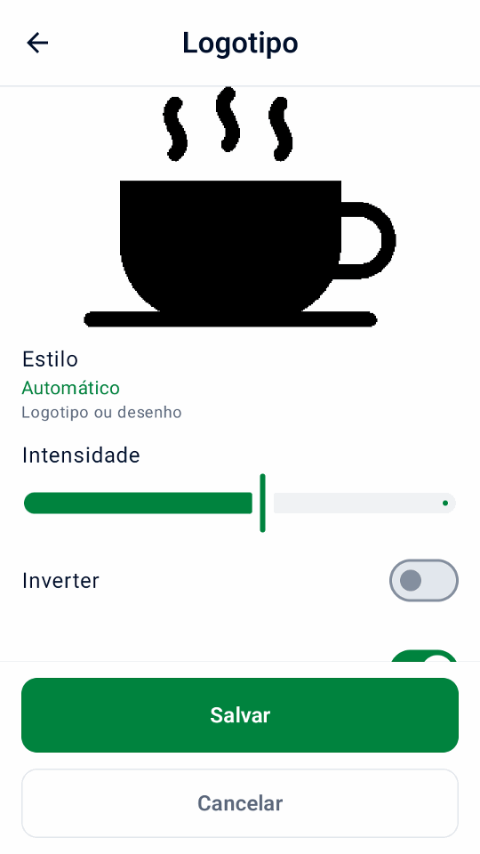
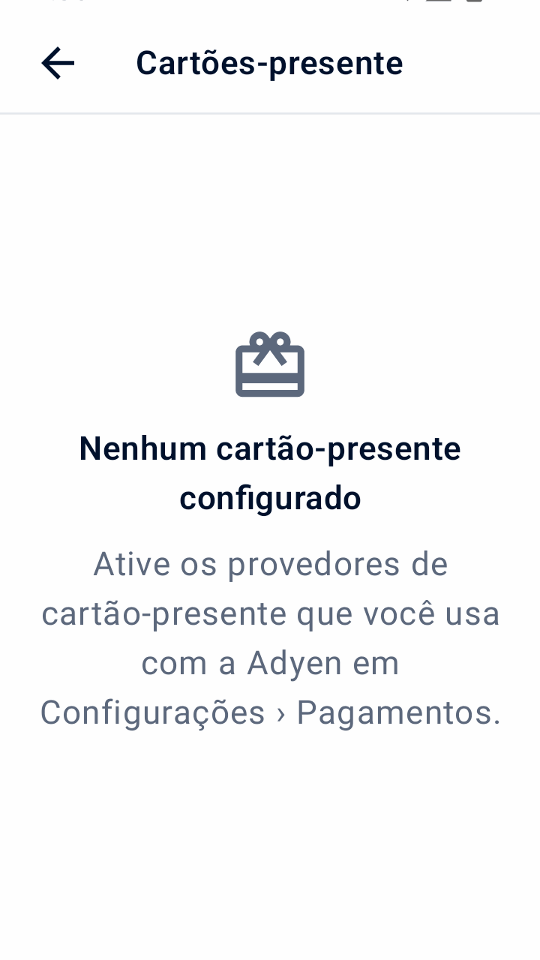

Guia
Usando Mini mPOS
Procedimentos passo a passo para o trabalho diário: receber pagamentos, reembolsar, entregar recibos e fechar o dia. Fluxos de trabalho opcionais seguem no final.
Operações diárias
Preparar produtos, impostos e acesso de pessoal
Antes de receber pagamentos reais, preencha a configuração da conexão Adyen. Você precisa de um terminal de pagamento ou do aplicativo Adyen Payments. Em seguida, prepare seus produtos, impostos e acesso de pessoal uma vez.
Definir a moeda e o imposto
- Em Configurações › Pagamentos, escolha um Moeda que sua conta de comerciante aceita para pagamentos presenciais.
- Em Configurações › Imposto, verifique as taxas, se os preços incluem impostos ou se o imposto é adicionado na finalização da compra e a taxa padrão para novos produtos.
Todo produto tem uma alíquota de imposto; use uma taxa de 0% para itens não tributados. Desligando Cobrar imposto deixa de cobrar imposto, mas mantém as alíquotas.
Importante
A alteração da moeda mantém os números nos seus preços; não os converte a uma taxa de câmbio. Verifique os preços dos seus produtos depois.
Adicionar produtos
- Abrir Configurações › Produtos e toque em +.
- Insira um nome, preço e taxa de imposto. Opcionalmente, adicione uma categoria e um código de barras, digitado ou digitalizado.
- Para um depósito, ligue Produto de pré-autorização para que apareça apenas nas pré-autorizações.
Configurar os PINs da equipe
Em Configurações › Segurança, toque em Definir PIN para proteger Configurações e Produtos com um PIN de administrador e escolha quando o acesso volta a ser bloqueado. Toque em Definir PIN de gerente para as ações protegidas; o PIN de administrador não as aprova. Depois, use Alterar PIN de administrador ou Remover PIN de administrador.
Em Permissões do gerente, escolha quais ações exigem o PIN de gerente. Ações semelhantes compartilham um interruptor; reembolsos referenciados, sem recibo e em dinheiro têm cada um o seu. A aprovação do gerente nestes guias segue essas escolhas.
Sem PIN de administrador, todas as ações ficam liberadas. Depois que ele existe, as ações protegidas ficam bloqueadas até que um PIN de gerente seja definido. Remover o PIN de administrador também remove o PIN de gerente; as escolhas de permissões são mantidas. Vários PINs incorretos bloqueiam a digitação por um tempo.
Aceitar um pagamento com cartão
- Na página inicial, toque em Nova venda. Toque em produtos, toque Digitalizar código de barrasou adicione um Item personalizado.
- Toque Cobrar. Verifique os itens, impostos e total, e preencha os campos de referência ou email.
- Toque Pagar. O terminal, ou aplicativo Adyen Payments com Tap to Pay, solicita que o cliente pague.
- Aguarde o resultado. Não inicie outro pagamento até que ele apareça.
- Entregar ao cliente um recibo com Imprimir recibo, Enviar recibo por e-mail ou Compartilhar recibo, a menos que tenha sido entregue automaticamente.
Nota
Conforme o terminal e sua conta de comerciante, os clientes inserem ou aproximam um cartão, ou aproximam um celular ou relógio. Com o Tap to Pay, o app Adyen Payments orienta o cliente.
Aviso
Resultado desconhecido não significa que o pagamento falhou. Verifique o pagamento original antes de cobrar novamente.
Referências do cliente e salvamento de cartões são opcionais; veja referências e cartões salvos. Para dividir a conta ou aceitar dinheiro, cartões-presente ou vale-refeição, veja os fluxos de pagamento opcionais. Para que os clientes paguem no próprio celular, use um link de pagamento. Se um pagamento for recusado, veja pagamentos recusados.
Reembolsar ou cancelar um pagamento
- Reembolsar
- Por um pagamento cobrado. Devolve todo ou parte do dinheiro.
- Cancelar (anular)
- Para um pagamento retido que não foi capturado: toque em Cancelar pré-autorização para um depósito, ou Cancelar pagamento para uma venda Aguardando gorjeta. Isso libera a retenção.
Para reembolsar:
- Na página inicial, toque em Reembolso e depois em Digitalizar recibo para ler o QR code de reembolso do recibo, ou em Escolher um pagamento para abrir a venda original em Histórico.
- Escolha um reembolso total, um valor ou itens individuais. Os reembolsos de itens precisam da venda original neste dispositivo.
- Confirme o reembolso e insira o Gerente PIN se solicitado.


Esses reembolsos estão vinculados ao pagamento original. Reembolse links de pagamento pagos na Customer Area.
Uma venda dividida é reembolsada para seus pagamentos originais. O Mini mPOS propõe quanto devolver a cada cartão e quanto dinheiro entregar; toque em um pagamento para ajustá-lo. Os cartões são reembolsados primeiro, um de cada vez, e depois o dinheiro, que exige um PIN de gerente. Se um reembolso no cartão não for aceito, nada mais é devolvido; abra a venda para ver o que falta.
Uma venda com sobretaxa informada devolve primeiro os valores de compra, depois a gorjeta e por fim a sobretaxa; um reembolso total inclui a sobretaxa restante.
Reembolso sem recibo
Use Reembolso sem recibo somente quando não houver pagamento para reembolsar, como uma devolução sem recibo. Ele devolve um valor ao cartão apresentado pelo comprador e não está vinculado a nenhum pagamento, então o Mini mPOS não pode verificar o que foi pago. Você é responsável por reembolsos errados ou repetidos.
Peça à Adyen para habilitar reembolsos não referenciados para a loja e defina o limite de reembolso da Adyen no Customer Area. Depois, em Configurações › Pagamentos, ative Permitir reembolsos sem recibo, defina seu próprio Limite de reembolso e um PIN de gerente. A Adyen não permite esses reembolsos em alguns países nem para carteiras com QR code; o Mini mPOS verifica a loja que a Adyen confirmou para o terminal.
Toque em Reembolso sem recibo, digite o valor, escolha um motivo, confirme e aprove com o PIN de gerente; em seguida, o comprador apresenta o cartão. Reembolso aprovado significa que o adquirente aprovou na hora; Reembolso solicitado significa que a Adyen recebeu a solicitação. O histórico, os recibos e o relatório diário mostram esses reembolsos separadamente; concilie-os manualmente.
Se o suporte da Adyen configurou um atraso de reembolso, ative Atraso de reembolso configurado. Enquanto durar o atraso, abra o reembolso e toque em Cancelar reembolso; depois verifique no Customer Area se ele foi interrompido.
Adyen: Unreferenced refunds · Adyen: Cancel an unreferenced refund
Importante
Reembolso solicitado significa que a Adyen recebeu a solicitação, e não que o cliente tenha o dinheiro. Confira o resultado final na Customer Area. Se o resultado de um reembolso for desconhecido, verifique antes de tentar novamente.
Imprimir, enviar por e-mail ou compartilhar recibos
A partir de um resultado de pagamento ou entrada do Histórico, toque em Imprimir recibo ou Enviar recibo por e-mail. Tablets e telefones também oferecem Compartilhar recibo, que envia uma imagem através do menu de compartilhamento do Android. A impressão precisa de um terminal com impressora.
Personalizar e testar recibos
- Em Configurações › Recibos, insira os dados da sua empresa, cabeçalho e rodapé. Ou toque em Importar detalhes comerciais da Adyen para revisar os dados da Adyen. Escolha Preencher dados ausentes para manter o texto existente ou Substituir dados existentes para usar o nome, endereço e telefone fornecidos. Campos importados em branco, identificação fiscal, título e rodapé permanecem inalterados.
- Escolher Imprimir automaticamente, quando imprimir um Via do estabelecimento e se deve Mostrar código de reembolso QR.
- Toque Imprimir recibo de teste e verifique a impressão. A visualização na tela não mostra o layout exato da impressora.
Outras opções:
- Mostrar valores de impostos
- Mostra o imposto incluído ou adicionado ao total. Não altera o imposto cobrado.
- Mostrar discriminação fiscal
- Lista o imposto para cada taxa. Necessário mostrar o imposto incluído quando os preços incluem impostos.
- Mostrar totais tributáveis por taxa
- Agrupa os totais dos itens por alíquota de imposto, incluindo 0%.
- Mostrar referências
- Ligado por padrão. Imprime a referência do comerciante e qualquer referência do cliente, para que um recibo possa ser correspondido ao seu pagamento.
- Taxa de imposto marcada (%)
- Marca itens nessa taxa com um Marcador de item e sua explicação. Deixe em branco para não haver marcador.
- Caracteres por linha
- 32 por padrão, para rolos de recibos estreitos. Escolha a largura da sua impressora com um teste de impressão.
Em Configurações › Recibos › Logotipo, escolha uma imagem PNG, JPEG ou WebP. Se o dispositivo não tiver seletor de arquivos, envie uma pelo auxiliar de configuração, sozinha ou com outras configurações. Confira a prévia em preto e branco: Estilo escolhe Automático, Logotipo ou Foto, e Escuridão, Inverter e Recortar margens fazem o ajuste fino. Escolha um Tamanho grande ou pequeno e salve. Desative Imprimir nome do estabelecimento se o logotipo já o incluir.
O logotipo aparece nos recibos impressos, enviados por e-mail e compartilhados, inclusive reimpressões. Para ajustá-lo, escolha de novo a imagem original; use Remover logotipo para apagá-lo.


Definir o idioma
O app está disponível em inglês, chinês simplificado, chinês tradicional, japonês, português do Brasil, espanhol e francês. Configurações › Idioma muda na hora o texto do app e os rótulos dos recibos neste dispositivo; o texto salvo do estabelecimento e os nomes de produtos não mudam. Seguir dispositivo usa o idioma do Android para o app. As linhas de cartão da Adyen seguem o idioma de recibos do terminal.
Configurar recibos de e-mail
- Abrir Configurações › Recibos por e-mail. Escolha seu provedor ou insira o servidor SMTP, porta, remetente e login. Use STARTTLS ou SSL/TLS.
- Envie um e-mail de teste.
- Na mesma tela, escolha quando solicitar o e-mail do cliente e se deseja enviar os recibos automaticamente.
Siga as instruções do seu provedor para permitir SMTP e obter a senha correta:
Se os recibos não forem impressos ou enviados, consulte problemas de impressora e e-mail.
Encontre pagamentos e feche o dia
Histórico lista pagamentos e reembolsos por dia, com totais diários.
Cada página mostra até 100 entradas de sete dias; use Anterior e Próximo para navegar. A busca abrange todas as transações mantidas.
- Filtrar por vendas, Aguardando gorjeta, pré-autorizações, reembolsos ou Precisa de atençãoe usar Forma de pagamento para uma marca de cartão ou carteira.
- Pesquisa por referência, código de autorização, referência de cliente ou email, últimos quatro dígitos
do cartão, marca, carteira ou valor exato. Cada palavra deve corresponder:
visa 34encontra pagamentos Visa de 34.
Os totais na tela seguem sua pesquisa e filtros. Os pagamentos retidos, como depósitos e gorjetas no recibo, contam como vendas no dia em que sua captura é aceita.
Fechar o dia
- Abrir Histórico, filtrar por Precisa de atenção e resolver cada entrada; veja resultados desconhecidos.
- Verifique o Aguardando gorjeta e filtros de pré-autorização. Insira gorjetas e capture ou cancele depósitos antes que seus depósitos expirem.
- Toque no ícone de impressão ao lado do dia para imprimir o Resumo diário local.
- Reconciliar com os relatórios da Adyen na Customer Area; veja o Guia de reconciliação de liquidação da Adyen.
O resumo cobre o dia inteiro, ignorando os filtros: vendas, gorjetas incluídas, reembolsos aceitos, líquidos, novas retenções e operações não resolvidas, para cada moeda. TEST e a atividade do simulador são rotuladas. Links de pagamento pagos e capturas sem data conhecida são listados separadamente como atividades sem data.
Importante
O resumo diário local cobre apenas pagamentos mantidos neste dispositivo. Não é liquidação da Adyen e não inclui outros dispositivos. O Customer Area é oficial.
Aviso
Alternar entre LIVE, TEST e o simulador exclui permanentemente todo o histórico de pagamentos e dados de relatório neste dispositivo. Se existirem pagamentos inacabados, o aplicativo avisa novamente: nada é cancelado na Adyen, mas a recuperação local e os dados de novas tentativas seguras são perdidos. Os produtos e as configurações permanecem.
Compare com os totais do terminal e feche um período
- Na página inicial, toque em Reconciliação, então Verifique os totais dos terminais. Mini mPOS primeiro verifica pagamentos de terminais pendentes ou desconhecidos e, em seguida, mostra Mini mPOS e vendas de terminais e reembolsos lado a lado.
- Se Os totais diferem, resolva os pagamentos que necessitam de atenção no Histórico e verifique novamente. O período terminal não é necessariamente um dia corrido; outros dispositivos que usam o terminal ou falta de histórico local podem causar diferenças. Links de pagamento, cobranças de tokens e histórico de amostras não são pagamentos terminais.
- No final do dia, toque em Encerrar período do terminal, confirme e conclua a aprovação do Gerente, se solicitado. O terminal encerra seu período e inicia um novo; isso não pode ser desfeito.
- Opcionalmente, toque em Imprimir o relatório de hoje para o Resumo diário local.
Não disponível com Tap to Pay. Uma comparação que confere ou um período fechado não confirmam a liquidação, a conclusão de reembolsos nem o envio off-line; o Customer Area continua sendo a referência.

Fluxos opcionais
Verificar e configurar capacidades da Adyen
Abrir Configurações › Capacidades da Adyen após conectar seu destino de pagamento. A tela mostra recursos como Disponível, Necessita configuração ou Não suportado neste destino. Estes são indicadores de configuração e não uma prova de que sua conta de comerciante, cartão ou método de pagamento possa concluir uma transação. Até que os pagamentos sejam configurados, a tela oferece Concluir a configuração dos pagamentos em vez disso.
- Toque Atualizar capacidades para ler as configurações do terminal selecionado. A inspeção terminal real utiliza o Funções API de gerenciamento no início rápido.
- Em terminais compatíveis, configure a gorjeta no terminal para a moeda de pagamento, DCC, MOTO ou limites off-line e toque em Salvar para Adyen. Isso altera as configurações do terminal na Adyen.
- Ative as opções de pagamento necessárias em Pagamentos, Gorjetas e doações ou Tela do terminal para o cliente em Configurações e teste-as em TEST. A tela também mostra Adyen Giving, autorização parcial, sobretaxa, cartões-presente, conciliação do terminal e tela do cliente, sem editá-los.
O Tap to Pay não oferece recursos de terminal físico como gorjeta no terminal, tela do cliente, MOTO/MKE, pagamentos off-line ou conciliação do terminal. Para habilitação da conta e requisitos de métodos de pagamento, siga a documentação de pagamentos presenciais da Adyen.

Use fluxos de trabalho de checkout opcionais
Ative em Configurações somente as opções de pagamento necessárias. Exceto a autorização parcial, a divisão e as sobretaxas, esses fluxos exigem um terminal físico compatível, não o Tap to Pay. Verifique as capacidades da Adyen e teste antes sua configuração real. A maioria das opções não pode ser combinada em um pagamento; o checkout explica o conflito e pede que você desative uma.
Aceitar pagamentos com orientação por áudio
Primeiro ative Ativar orientação por áudio em Configurações › Pagamentos › Acessibilidade, depois que o suporte da Adyen a habilitar para seus terminais, eles usarem software compatível e o idioma deles não for estoniano, letão, islandês ou lituano. Ela está disponível em AMS1, S1F2, S1F2L, S1E2L e S1U2 com software 1.117 ou posterior, e em M450, P630 e SFO1 com 1.124 ou posterior. Veja os requisitos de pagamentos acessíveis da Adyen.
No checkout, ative Orientação por áudio para o comprador que precisar e desative gorjetas, Giving e digitação manual. Use um cartão que não exija assinatura. O pagamento solicita o valor total e pula os avisos da tela do cliente.
O terminal lê as instruções em voz alta; dê tempo ao comprador. O Mini mPOS espera até dez minutos pelo resultado. Se nenhuma resposta chegar, verifique o resultado desconhecido antes de outro pagamento. A escolha é redefinida após cada tentativa.
Sobretaxas
A Adyen adiciona as sobretaxas que você configura na Adyen; o Mini mPOS não as define. Quando a Adyen informa uma, o histórico, os recibos e o relatório diário a mostram separada das compras e gorjetas; o total cobrado já a inclui. Uma sobretaxa não informada continua desconhecida. Se uma autorização parcial não informar a sobretaxa, verifique o Customer Area ou reembolse o cartão original antes de recomeçar.
Informe a sobretaxa antes do pagamento, principalmente com o Tap to Pay, que não tem tela de confirmação de sobretaxa. Não combine sobretaxas com DCC. O Mini mPOS bloqueia ajustes e capturas acima da reserva original quando uma sobretaxa foi informada. Veja os requisitos de sobretaxa da Adyen e a configuração de sobretaxas da Adyen.
Parcelamento de cartões no México
Confirme com a Adyen seus programas de emissores e tarifas, ative o parcelamento em Configurações › Pagamentos e atualize as capacidades da Adyen para verificar a loja mexicana. No checkout, escolha débito, crédito à vista ou 3, 6, 9, 12 ou 18 parcelas mensais, e pague a venda inteira com um cartão elegível. Links de pagamento, tokens, carteiras escaneadas e cartões-presente não levam o plano.
Os detalhes, o histórico e os recibos mostram o plano solicitado e o plano retornado. Um emissor não compatível pode recusar. Reembolse o pagamento original por valor ou integralmente; o emissor administra o cronograma.
Adyen: Parcelamento de cartões no México
Receber um pagamento parcialmente autorizado
Ative Permitir autorizações parciais para aceitar uma aprovação menor que o valor solicitado. Quando o resultado mostrar Parcialmente pago, confira os valores pago e restante e toque em Receber ao lado de Início. Escolha como receber o saldo na mesma venda. Não inicie outra venda pelo total: a parte aprovada já foi paga.
Uma resposta ausente não é uma aprovação parcial. Resolva os resultados desconhecidos antes de receber mais.

Dividir uma venda ou receber em dinheiro
No checkout, toque em Outras opções de pagamento. Escolha Dinheiro para receber todo o saldo ou Dividir pagamento para escolher um valor, partes iguais ou itens, depois Pagar ou Dinheiro. Preços e impostos permanecem iguais, e os centavos extras vão para as primeiras partes. O dinheiro recebido começa no valor devido; a digitação o substitui. Dinheiro exato restaura esse valor. Confira o dinheiro recebido e o troco, devolva o troco e confirme. O dinheiro é registrado apenas neste dispositivo.
A venda fica Parcialmente paga até ser quitada. Toque em Receber no resultado ou Cobrar saldo no Histórico para continuar, mesmo após reiniciar. A próxima parte igual é selecionada automaticamente. Resolva resultados desconhecidos de cartão antes de receber mais. O recibo lista todos os pagamentos; o relatório diário mostra dinheiro separado e os totais do terminal nunca o incluem.
Com cartões-presente configurados, toque em Cartão-presente para pagar o valor escolhido com um deles; um saldo insuficiente é aprovado em parte. Pagamentos com cartão-presente são reembolsados para o cartão, exceto cartões-presente locais, reembolsados fora do Mini mPOS.


Demonstrações do simulador em português do Brasil de uma venda dividida.
Saque com compra
Depois que a Adyen confirmar sua loja e programa de cartões, ative Saque com compra em Configurações › Pagamentos, defina um limite de dinheiro e um PIN de gerente. No checkout, digite o dinheiro extra solicitado e pague a venda inteira com um cartão elegível. Uma compra pode ser aprovada mesmo com o saque recusado; entregue apenas o dinheiro aprovado.
Saque
Saque, na tela inicial, solicita dinheiro sem compra. Ative-o separadamente depois que a Adyen confirmar o saque eftpos australiano para a loja.
Após a aprovação, confira o dinheiro aprovado e o débito no cartão. Entregue apenas o dinheiro aprovado, toque em Registrar dinheiro entregue e aprove com o PIN de gerente. Nunca entregue dinheiro cujo valor não foi informado, e verifique um resultado desconhecido em vez de solicitar dinheiro de novo. O histórico mantém as entregas não registradas; os relatórios diários mostram o dinheiro aprovado e entregue separado das vendas. Reembolsos nunca devolvem o dinheiro entregue.
Aceitar vale-refeição
Ative Vale-refeição em Configurações › Pagamentos somente depois de assinar os contratos com os emissores, cadastrar a loja e ter os vales habilitados pela Adyen. O país verificado da loja do terminal define quais vales valem: vales do PAT no Brasil; vales Mastercard ou Visa na Bélgica, Finlândia, Alemanha, Luxemburgo e Espanha; ou Titres-restaurant na França. Atualize as capacidades da Adyen após configurar. Monizze, Pluxee Bélgica e Lunch Check não são oferecidos.
Quando os vales exigirem produtos elegíveis, abra cada produto em Configurações › Produtos e ative Aceito em vale-refeição; itens personalizados nunca são elegíveis. No checkout, toque em Outras opções de pagamento › Dividir pagamento e depois em Vale-refeição. O Mini mPOS oferece o máximo que o vale pode pagar; receba o restante em cartão ou dinheiro. Vales Mastercard ou Visa podem ser aprovados em parte. Titres-restaurant aceitam no máximo EUR 25 por dia, nunca aos domingos ou feriados, e não podem ser reembolsados: ofereça crédito na loja. Um vale brasileiro com saldo insuficiente é recusado; digite um valor menor.
No Brasil, ative Escolher vales brasileiros no app para solicitar um pagamento com vale pelo Mini mPOS. Deixe desativado quando o suporte da Adyen tiver habilitado a tela de crédito, débito ou voucher do próprio terminal; nesse caso, cobre no cartão e o comprador escolhe no terminal. Devoluções de vale voltam ao vale original, nunca em dinheiro.
Adyen: vale-refeição no Brasil · Adyen: vales-refeição na Europa
Usar a tela do terminal voltada para o cliente
Com um terminal de rede/nuvem separado, abra Configurações › Tela do terminal para o cliente. Escolha se deseja mostrar os detalhes do item antes do pagamento, pedir ao comprador para confirmar o pedido ou receber um e-mail quando a finalização da compra não tiver nenhum. Solicitar um e-mail precisa recibos de e-mail a ser configurado; o recibo é então enviado por e-mail automaticamente quando Enviar o recibo por e-mail automaticamente está ativado. Após a aprovação, você pode mostrar um código QR e solicitar uma classificação de 0 a 10; uma classificação retornada aparece nos detalhes da transação.
Esses avisos usam o idioma do app. Eles não são oferecidos quando o Mini mPOS roda no próprio terminal de pagamento. O QR code contém a referência do comerciante, não um recibo; entregue o recibo mesmo assim.
Convide uma doação de caridade
Depois de combinar o Adyen Giving com a Adyen, ative Doação de caridade (Adyen Giving) em Configurações › Gorjetas e doações. Na tela de pagamento, selecione-o para solicitar uma doação no terminal após o pagamento. Não é oferecido para pré-autorizações ou retenções de recibos.
A compra e a doação são separadas. O valor da doação informado aparece nos detalhes da transação; uma compra aprovada por si só não confirma uma doação.
Faça um pagamento MOTO ou digitação manual do cartão
- Verifique com a Adyen se seu terminal e sua conta permitem o modo de entrada requerido. Configurar MOTO em Capacidades da Adyen quando necessário, e definir PINs de equipe sob PINs da equipe.
- Em Configurações › Pagamentos, habilite a opção MOTO ou Digitação manual do cartão. Na tela de pagamento, selecione Pedido por correio/telefone (MOTO) para um pedido remoto, ou Digitação manual do cartão (MKE) quando a leitura do chip ou sem contato falha. Somente um pode ser selecionado.
- Toque em Pagar, leia o aviso de responsabilidade por fraude e chargeback e conclua a aprovação do gerente quando solicitada.
Transações digitadas trazem maior responsabilidade por fraude e chargeback para o comerciante.
Reconhecer pagamentos offline e lotes pendentes
EMV offline e Store-and-Forward precisam de um terminal suportado alcançado localmente: Mini mPOS nesse terminal ou um terminal em sua rede. Eles não são oferecidos por meio de roteamento em nuvem ou Tap to Pay. Organize o processamento offline com a Adyen e analise seus riscos antes de estabelecer limites Capacidades da Adyen; Mini mPOS não coloca pagamentos em fila nem torna um terminal acessível quando sua rede local está inoperante.
O histórico marca as vendas off-line relatadas. Abra uma venda para ver Processamento off-line, se usou EMV off-line ou Store-and-Forward, e qualquer Lotes off-line não confirmados relatado pelo terminal. Uma aprovação off-line ainda não pode ter referência PSP. Não é um resultado desconhecido, mas não confirma que a Adyen recebeu ou liquidou o pagamento.
Restaure a conexão do terminal com a Adyen e verifique os pagamentos carregados e os resultados finais na Customer Area. Verifique os avisos offline e de lote não confirmado durante reconciliação terminal; os totais correspondentes não confirmam a liquidação offline. Se nenhuma resposta conclusiva de pagamento chegar, siga recuperação de resultado desconhecido em vez de assumir a aprovação offline ou cobrar novamente.

Digitalizar o código da carteira do comprador
Uso Digitalizar carteira na finalização da compra para ler um código de pagamento do aplicativo de carteira do comprador. Isso é diferente de ler o código de barras de um produto ou um recibo de reembolso. Funciona com um terminal de pagamento físico, não com Tap to Pay; a descoberta de carteira precisa de uma função de leitura.
- Verifique os campos total e checkout e toque em Digitalizar carteira. Se a gorjeta de recibo for selecionada, confirme o pagamento sem ela: a carteira cobra o total imediatamente, não uma pré-autorização.
- Escolha a carteira do comprador. Uma única carteira disponível é selecionada automaticamente. Aparecem apenas carteiras configuradas individualmente; Alipay + não implica opções separadas de GCash, DANA, Kakao Pay ou TrueMoney.
- Em um terminal confirmado equipado com scanner, pressione seu botão de digitalização. Este pode ser o terminal de rede/nuvem, não o dispositivo executando Mini mPOS. Para digitalizar com a câmera do dispositivo, toque em Usar câmera.
- Digitalize o código QR de pagamento do comprador ou o código de barras de pagamento. Uma digitalização válida inicia o pagamento imediatamente. Aguarde o resultado normal do pagamento e entregue o seu recibo.
Cancelar mantém o carrinho. Uma leitura no terminal termina após 30 segundos; use Digitalizar novamente ou a câmera. As carteiras podem não aceitar Salvar cartão; um pagamento aprovado sem token salvo continua aprovado. Resolva problemas de carteira e nunca substitua um pagamento desconhecido por uma nova leitura.
Confirme a configuração da sua carteira e teste o comportamento com o Guia da carteira Adyen e Guia Adyen PayPal e Venmo.


Demonstrações de simuladores em português do Brasil de digitalização de carteiras.
Utilizar referências e salvar cartões
- Referência do comerciante
- Para registrar um número de reserva ou pedido, ative Configurações › Pagamentos › Solicite uma referência de comerciante. O número identifica o pagamento na Adyen. Se deixado em branco, uma referência exclusiva será gerada.
- Referência do comprador
- Em Configurações › Pagamentos, escolha o Referência do comprador: uma referência do cliente digitada na finalização da compra (o padrão), o e-mail do cliente ou nenhum. Ele é enviado para a Adyen com cada pagamento. As referências de e-mail são criptografadas por padrão; use o mesmo sal em todos os dispositivos.
- Cartões salvos
- Com um conjunto de referência do comprador, ligue Oferecer salvamento de cartões e escolha o Modelo de processamento recorrente para sua configuração Adyen. Obtenha o consentimento do cliente antes de selecionar Salvar cartão para pagamentos futuros. Para carregar um mais tarde, consulte Gerenciar tokens.
Gerenciar tokens
- Na página inicial, toque em Tokens e insira o Gerente PIN se solicitado.
- Insira a referência do cliente, ou o e-mail quando for a referência do comprador, e toque em Buscar tokens.
- Toque em Cobrar ao lado de um token e adicione produtos ou um Item personalizado. Este carrinho é separado de Nova venda.
- Revise a cobrança e toque Cobrar.
O cliente não está presente, então obtenha o consentimento dele antes. Tokens salvos com outro Modelo de processamento recorrente não podem ser cobrados aqui. Reembolse esses pagamentos pelo Histórico. Se o resultado de uma cobrança for desconhecido, verifique-o pelo histórico em até sete dias e, depois disso, no Customer Area. No checkout de uma nova venda, Cobrar token aparece quando a referência do comprador tem tokens salvos.
Para excluir um token, toque na ação Excluir, confira os detalhes, confirme e aprove com o PIN de gerente. A exclusão remove o token na Adyen para o Mini mPOS e qualquer outra integração; não pode ser desfeita. Pagamentos anteriores e seus reembolsos continuam disponíveis. Se a exclusão não for confirmada, toque em Verificar exclusão antes de cobrar ou excluir de novo.
Vender e gerenciar cartões-presente
Cartões-presente funcionam com um terminal Adyen; o Tap to Pay não os aceita. Em Configurações › Pagamentos › Cartões-presente, ative cada provedor com o qual você concluiu a integração na Adyen, adicione o tipo de cartão que a Adyen informou para Intersolve ou cartões locais e escolha como a equipe apresenta os cartões: escanear com a câmera e informar a validade, ou passar ou digitar no terminal. Só são oferecidas as ações que a Adyen documenta para cada provedor: a desativação é só para Givex e cartões locais aceitam apenas pagamentos.
- Na tela inicial, toque em Cartões-presente e escolha o provedor e como o cartão é apresentado.
- Escolha Consultar saldo, Ativar, Recarregar, Sacar em dinheiro, Reembolsar no cartão ou Desativar.
- Para adicionar valor, escolha Pagamento com cartão, ou Recebido fora do app e confirme que recebeu o dinheiro.
- Confirme e aprove com o PIN de gerente.


A aprovação de consultas de saldo e alterações de valor segue as permissões da equipe. O pagamento com cartão é cobrado primeiro e o valor só é enviado depois da aprovação; se o resultado do pagamento for desconhecido, verifique-o antes de qualquer outra ação. Se o pagamento foi cobrado mas nenhum valor foi adicionado, a atividade mostra Valor não adicionado: envie o valor de novo, reembolse o pagamento com cartão ou registre o valor devolvido. Nada é repetido automaticamente.
Desfazer recarga aparece para a última recarga do cartão nas últimas 24 horas. O saque normalmente paga todo o saldo e encerra o cartão; só alguns cartões Givex permitem menos. Entregue o dinheiro após a aprovação e toque em Dinheiro entregue; uma entrega não confirmada fica em Requer atenção, mesmo após reiniciar. A atividade de cartões-presente aparece no Histórico e separadamente no relatório diário; nunca conta como venda.
Receba o pagamento com um link
Pré-requisitos
- Sua conta de comerciante atende aos Requisitos do Adyen Pay by Link, incluindo termos e condições, antes do uso ao vivo
- Na finalização da compra, toque em Criar link de pagamento.
- Mostre o código QR ou toque em Enviar link por e-mail, Imprimir link ou, em um tablet ou telefone, Compartilhar link.
- Mantenha a tela do link aberta para ver o pagamento chegar, ou depois toque em Verificar pagamento em sua entrada Histórico.
- Se o link não for mais necessário, toque em Cancelar link.
A entrada mostra Aguardando pagamento até que o link seja pago, expire ou seja cancelado. Defina por quanto tempo os links funcionam Configurações › Pagamentos › Links de pagamento. Os links são apenas para vendas, não para depósitos ou gorjetas no recibo.
Importante
Qualquer pessoa com um link real pode pagar até que ele expire. Reembolsar links pagos em Customer Area › Pagamentos › Lista de pagamentos; o aplicativo não pode reembolsá-los.
Se um link estiver faltando ou não for atualizado, consulte problemas de link de pagamento.
Manter e receber um depósito
Pré-requisitos
- Pré-autorização habilitada pelo Suporte Adyen para seus métodos de pagamento; veja o Guia de pré-autorização Adyen
Uma pré-autorização retém um valor no cartão sem cobrar. Toda a sua conta não precisa de captura manual; Mini mPOS solicita apenas para esses pagamentos.
- Na página inicial, toque em Nova pré-autorização. Escolha um produto pré-autorizado, escaneie seu código de barras ou insira um valor. Cada pré-autorização possui um item.
- Na finalização da compra, toque em Pré-autorizar. O recibo mostra o valor retido.
- Quando estiver pronto, abra a entrada em Histórico e escolha uma ação:
- Captura
- Cobre o valor devido. Uma valor menor libera o restante; um valor maior solicita primeiro ao emissor do cartão que aumente a retenção. Os reembolsos são possíveis assim que a captura for solicitada.
- Ajustar valor
- Altera o valor retido sem cobrança. O envio do mesmo valor renova a autorização.
- Cancelar pré-autorização
- Libera a retenção. Se o pagamento já foi capturado na Customer Area, a Adyen o reembolsará integralmente.
Captura solicitada não é uma confirmação final; verifique o Customer Area. Para respostas imediatas aos ajustes, habilite Dados de autorização de ajuste de retorno conforme descrito no Guia de ajuste de autorização Adyen .
Aviso
As retenções expiram. Verifique diariamente o filtro de pré-autorização e capture ou cancele imediatamente. Para operações com falha ou desconhecidas, consulte problemas de captura.
Coletar uma gorjeta no terminal
- Verifique as gorjetas no terminal em Capacidades da Adyen. Defina as opções de gorjeta predefinidas e personalizadas do terminal para a moeda de pagamento quando necessário.
- Em Configurações › Gorjetas e doações, habilitar Gorjeta no terminal e escolha seu padrão de checkout. Habilite opcionalmente Gorjetas sugeridas conforme o carrinho para valores fixos em cestas pequenas e percentagens em cestas maiores, ou Gorjeta sobre o valor antes dos impostos.
- Na tela de pagamento, selecione Gorjeta no terminal e toque em Pagar. O comprador escolhe uma gorjeta antes de o cartão ser cobrado. Verifique o total e a gorjeta devolvidos e entregue o recibo.
Isto não necessita de impressora ou entrada posterior de gorjeta. Gorjetas no terminal e gorjetas sobre o recibo não podem ser selecionadas juntas. Nenhum deles é oferecido para pré-autorizações, pagamentos de carteira digitalizada ou links de pagamento; as gorjetas no terminal não são oferecidas com Tap to Pay.

Colete uma gorjeta escrita no recibo
Pré-requisitos
- Um terminal com uma impressora
- Pré-autorização e sobrecaptura habilitadas pelo Suporte da Adyen; veja o Guia de gorjetas de recibo da Adyen
Em Configurações › Gorjetas e doações, escolha Ativado (padrão desativado) ou Ativado (ativado por padrão) para definir como a opção na tela de pagamento inicia. Desativado, o padrão, oculta-o. Alguns cartões de débito e carteiras não suportam esse fluxo.
- No final da compra, ligue Gorjeta no recibo e toque em Pagar. A conta é retida, não cobrada.
- Imprimir o recibo. Possui linhas de gorjeta e total em branco, e a cópia do comerciante possui uma linha de assinatura.
- Quando o cliente tiver preenchido, toque em Insira a gorjeta no resultado ou no histórico Aguardando gorjeta filtro.
- Insira a gorjeta ou o total, ou toque em Nenhuma gorjetae confirme.
O aplicativo captura a conta mais a gorjeta. Gorjetas acima de 20% precisam primeiro que o emissor do cartão aumente a retenção; se recusar, insira uma gorjeta menor ou nenhuma. Uma gorjeta salva não pode ser alterada. Antes de inserir uma gorjeta, cancele o pagamento em vez de reembolsá-lo; depois, os reembolsos incluem a gorjeta.
Aviso
Informe todas as gorjetas prontamente, incluindo zero, para capturar os valores antes que as retenções expirem. Para capturas com falha ou desconhecidas, consulte problemas de captura.
Configure mais dispositivos e gerencie dados
- No dispositivo configurado, abra Configurações › Dados e transferência › Compartilhar com outro dispositivo. Escolha o catálogo, configurações e/ou senhas e chaves e toque em Mostrar códigos QR.
- No novo dispositivo, escolha Configurar a partir de outro dispositivo e escaneie todos os códigos, em qualquer ordem. Escolha se deseja mesclar ou substituir seu catálogo.
- Insira o código de transferência de 12 caracteres mostrado no primeiro dispositivo, mesmo ao copiar apenas produtos ou configurações. Mantenha-o separado dos códigos QR. Toque Importar.
- Verifique preços e impostos, teste a conexão em Configurações › Terminale imprima um recibo de teste.
O novo dispositivo mantém destino de pagamento, terminal, ambiente e registro Tap to Pay próprios. Uma chave compartilhada funciona para outro terminal somente se a Adyen atribuir a mesma chave a ele.
Importante
Esta é uma cópia única, não uma sincronização ou um backup do histórico de pagamentos. Cada dispositivo mantém seus próprios pagamentos. Limpar os dados do aplicativo em Android exclui todos os produtos, configurações e histórico do dispositivo.
Em Configurações › Dados e transferência, conjunto Manter transações para ou toque em Limpar histórico liquidado; pagamentos não resolvidos são sempre mantidos.
Em um tablet ou telefone, Mini mPOS verifica uma versão mais recente na inicialização. Se a casa oferece Atualizar, toque nele para abrir o APK em seu navegador e instale o download. Os terminais Adyen são atualizados por meio do Customer Area, não deste prompt. Você também pode obter o último lançamento e siga o etapas de instalação. Mantenha a mesma fonte de assinatura e instale sobre o aplicativo existente; não desinstale ou limpe seus dados.
Para problemas de importação, consulte PIN e problemas de transferência .